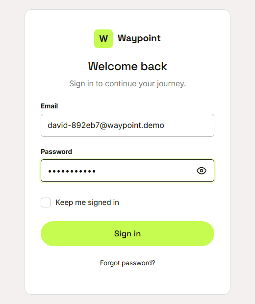
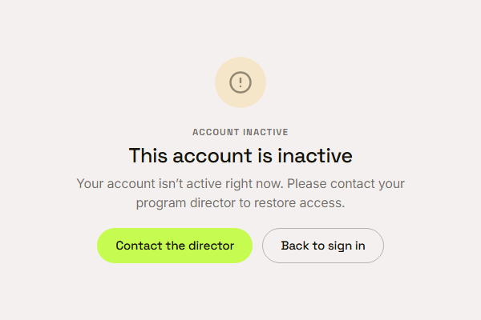

Waypoint · Video 087
When an account is deactivated
Refused at sign-in, with a way forward
The right details, still refused

David signs in as usual
This account is inactive

A page of its own, in plain words
Two ways forward
Contact the director, or go back to sign in
Things to remember
- The sign-in is refused, even with the right password
- A clear page says the account is inactive
- Contact the director is the way back
- Access returns only when the program restores it